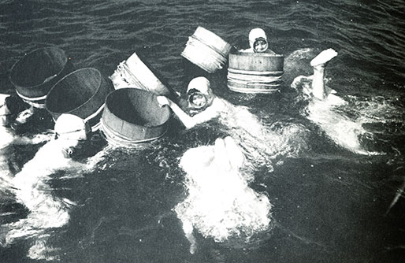

The history of pearl diving in the Middle East, especially in the Persian Gulf, dates back more than 7,000 years. The Gulf is one of the most well-known pearl-producing sites in the world because of the favorable oyster conditions found in its warm, shallow waters.
Pearls' importance in trade and culture is highlighted by the fact that they are mentioned in ancient Mesopotamian texts as early as 2300 BCE. The exceptional quality of pearls from the Gulf was acknowledged by the Roman author Pliny the Elder around the first century CE.
With Gulf pearls controlling the world market, the industry peaked in the late 19th and early 20th centuries. However, natural pearl diving declined after artificial pearls were introduced in the 1930s.
Social and Economic Impact

Prior to the discovery of oil, the Gulf's economy was based primarily on the pearl business. With jobs ranging from pearl assessors and boat builders to divers and merchants, it produced an elaborate social system.
Gulf pearls were highly valued in foreign markets, especially in Europe and India. In addition to bringing money to the area, this international trade promoted cross-cultural interactions.
The region's economy was significantly impacted by the 1930s collapse of the natural pearl industry, which ultimately paved the way for the current oil-based economy and brought about considerable societal changes.